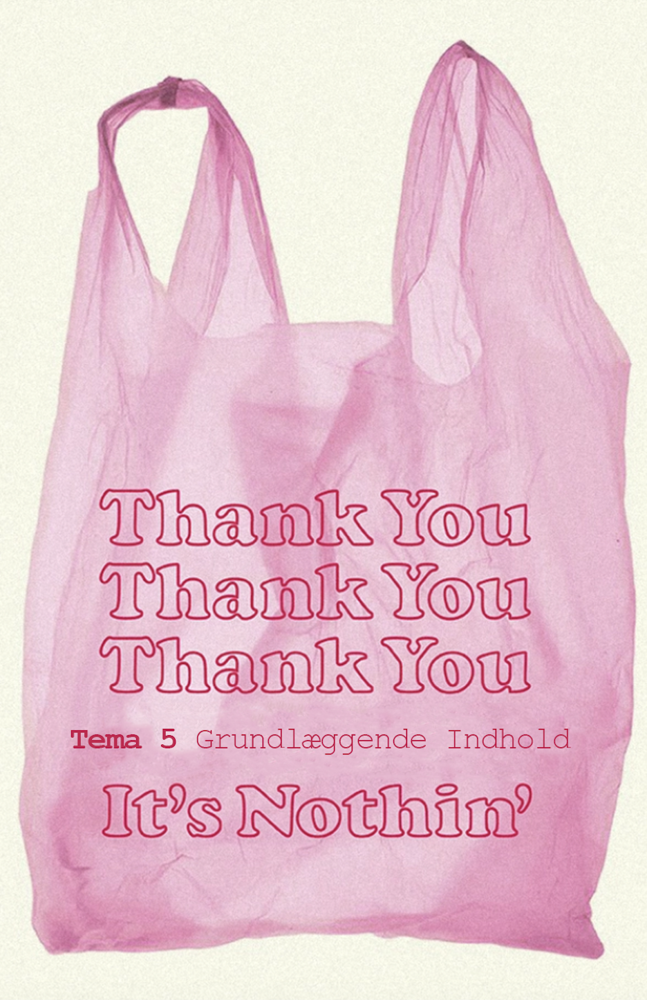

TEMA 3 - Grundlæggende UX/UI: I dette tema har jeg lave et emnesite, som leger lidt med de klassiske rammer for et site. Emnet på sitet er “søvn” og jeg har lavet det i en blogagtig stil. Dette var det første site jeg skulle lave helt selv fra bunden af, hvor fokusset især lå på brugervenlighed af produktet. Jeg blev introduceret til designprocessen og research/idé fasen. Jeg lavede moodboards og et styletile, samt et wireframe i hånden og en prototype i figma, inden jeg beyndte med selve koden. Derudover brugte jeg til dette site nogle forskellige tests til udviklingen af sitet og for at gøre brugerens rejse på sitet så optimal som muligt. Jeg benyttede mig af en “trunk test” og en “tænke-højt-test”, og implemeterede de forbedringer jeg fandt frem til herigennem, på mit site. Til præsentationen af mit site i undervisningen, lavede jeg også en powerpoint. Klik HER for at se den. Og ellers klik på resten af teksten, for at se mere til dette projekt.

TEMA 5 - Grundlæggende indhold: I dette tema har jeg, i samarbejde med min gruppe lavet et redesign af en virksomheds hjemmeside. Vi havde et fokus på samarbejde, da dette var det første gruppeprojekt og vi lærte blandt andet begreberne Github, Netlify og Scrum at kende. Jeg blev tildelt rollen som scrum-master og havde derfor til opgave at facilitere og indkalde til gruppens møder og være tovholder på projektet. Jeg fik også en introduktion til videoproduktion og redigering igennem et videosite, der også var en del af temaet. Jeg fandt også her ud af, hvordan jeg implementerer indhold som dette på et site. Sitet blev ikke helt færdig, da vi både havde nogle problemer med samarbejdet, grundet en del sygdom i gruppen og med at få de forskellige elementer til at virke på vores site. Klik for at se mere til dette projekt. Eller klik HER, for at se mit videosite.
